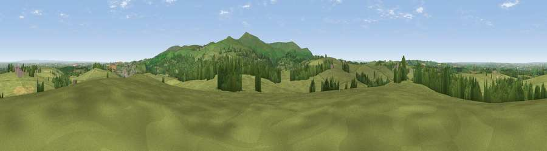

Viewpoint near Okehampton
#12728 in England · top 17% of its area beats it · near OkehamptonThe view, rendered

A 360° render of this exact spot computed from the terrain model, tree cover and land cover — summer colours, afternoon light, calibrated against photographs of famous viewpoints. Real trees, hedges and buildings will differ in detail.
The panorama
Grey silhouette: terrain skyline in each direction (720 bearings, Earth curvature and refraction included). Dashed green: skyline with trees (+15 m) and buildings (+8 m) as obstacles. Blue strip: how far the ground is visible on each bearing.
Where the view opens
Wedge length = distance to the farthest visible ground on that bearing (vegetation-aware). Rings at 10, 25 and 50 km.
What fills the view
81% grassland · 15% woodland · 3% cropland · 2% built-up
Angular shares of the visible panorama (visual magnitude), not map area. Landscape diversity 0.27 (0–1 Shannon).
Key numbers
More beautiful places nearby
The staircase of upgrades: each row has a higher view potential than everything closer. Driving times are estimates from straight-line distance, calibrated against real road routing — check an actual route before setting out.
| Place | Direction | Drive | Score |
|---|---|---|---|
| Viewpoint near Sourton | S · 4 km | ~9 min | 72.2 |
| Viewpoint near Okehampton | SSE · 5 km | ~10 min | 74.5 |
| Yes Tor | SSE · 5 km | ~11 min | 78.5 |
| Viewpoint near North Bovey | SE · 21 km | ~35 min | 79.3 |
| Viewpoint near Dousland | S · 25 km | ~41 min | 81.0 |
| Shell Top | S · 31 km | ~49 min | 81.8 |
| Viewpoint near Lee Moor | S · 32 km | ~50 min | 82.7 |
| Viewpoint near Bucks Mills | NW · 34 km | ~52 min | 84.0 |
50.73750, -4.03534 · source: screening · position refined by local search. Computed location — check access rights before visiting.